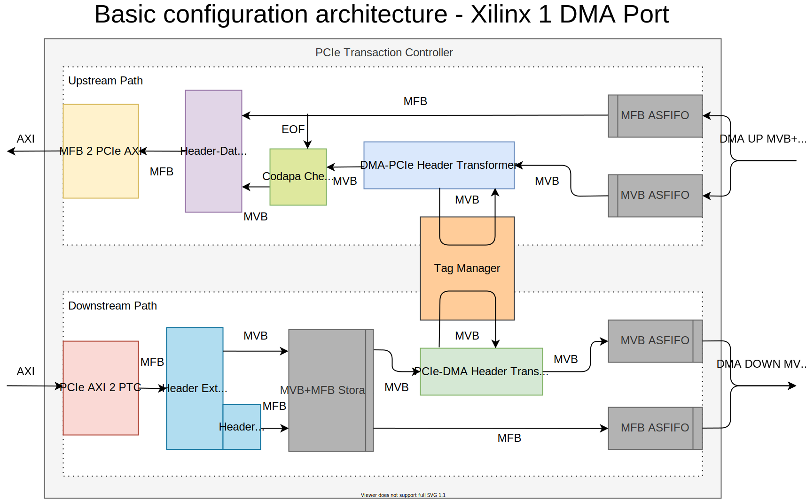

PTC (PCIe Transaction Controller)
The PTC unit converts between MVB+MFB bus and an interface of a specific PCIe IP. It enables PCIe Transaction layer support. It only works with the Requester part of PCIe communication (requests from FPGA to host computer and responses for such requests). The unit contains multiple different IP-side interfaces for different IP cores. Only one of these interfaces is used in each design depending on the generics setting.
Block diagram
{kind=link}
The PTC unit has 2 main parts: the Upstream Path and the Downstream Path. The Upstream Path receives MVB headers from the DMA module and MFB frames in case of a write request. It transforms them into PCIe requests and sends the to the IP core.
The Downstream Path receives responses for previous read requests and transforms them into MVB headers and MFB frames for the DMA module to process.
Both these parts are connected to the Tag Manager unit. The purpose of the Tag Manager is to convert between the ID tagging space of the DMA transactions and the ID tagging space of the PCIe transactions. The DMA tagging consists of a Unit ID (one for each unit which generates requests) and a Tag. This way, each unit can have its own independent space of transaction Tags. On the other hand, PCIe transactions require Tags to be unique accross all read requests, which are currently waiting for a response. The Tag Manager dynamically assigns a free PCIe Tag to each upstream read request and stores the corresponding DMA Unit ID and Tag. For downstream read responses, the mapping is done the other way around based on the previously stored information. The Tag Manager is also responsible for freeing of the PCIe Tags, checking of their availability and of the availability of storage space in the downstream MVB+MFB Storage FIFO. (The MVB+MFB Storage FIFO must be kept from overflowing to prevent fall of DST_RDY on the downstream IP core interface.)
For more detailed description of the Tag Manager see its documentation.
Other components
Appart from the Tag Manager, the PTC (as shown on the diagram above) contains these components:
MVB ASFIFO, MFB ASFIFO
Converts between DMA Module clock and PCIe IP core clock (PTC clock).
DMA-PCIe Header Transformer, PCIe-DMA Header Transformer
Converts between the DMA and PCIe transaction header format. This requires the remapping of Tags using the Tag Manager. These units’ implementations are dependent on the type of the PCIe IP core.
Codapa Checker
Halts the propagation of write request headers to the Header-Data Merger until the entire corresponding MFB frame has been propagated. The frame can take many cycles before it is fully loaded.
Header-Data Merger
Inserts write request headers before the corresponding MFB frames. Creates a new frame in case of a read request.
MFB 2 PCIe AXI, PCIe AXI 2 MFB
Converts between MFB bus and the Xilinx AXI interface.
Header Extractor
Extracts MVB headers from incoming downstream response frames.
Header Cutter
Cuts extracted headers from the start of response frames.
MVB+MFB Storage FIFO
Stores responses. In case the DMA cannot process the responses at full speed, this unit ensures (together with the Tag Manager) that the input DST_RDY is still active. This is required for some PCIe IP cores.
Architecture configurations
The PTC architecture changes depending on the type of the connected PCIe IP core. The architecture described in the diagram above is for Xilinx IP core with 1 DMA port and no MFB resizing.
There are these changes which may occur:
MFB resizing
In some cases, the width of the DMA MFB is different from the width of the PCIe data interface. Then the data bus must be resized as shown in the following figure:

2 DMA Ports
When the throughput of the PCIe interface is double compared to the DMA module (the PTC clock frequency is double), the PTC is connected to 2 DMA upstream and downstream interfaces.

Intel H-Tile
The Intel H-Tile PCIe IP has different interface from the Xilinx AXI.
{kind=link}
Intel P-Tile / R-Tile
The P-Tile and R-Tile interfaces already have a separated interface for headers and data much like the MVB and MFB. This eliminates the need for some of the components.
{kind=link}
References
For more detailed description refer to Jan Kubalek’s thesis 2019/20.